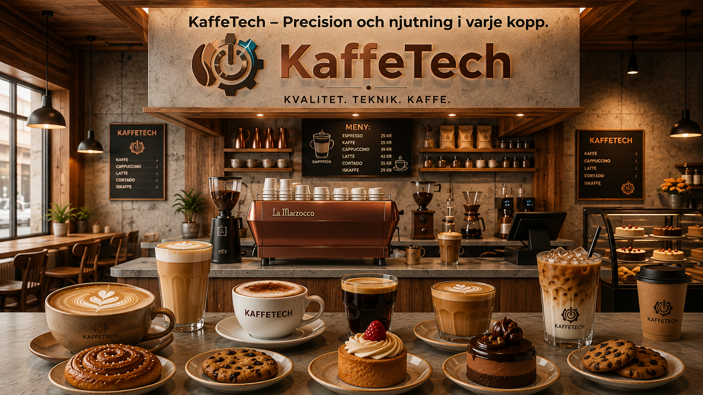

Kaffe
Fylligt bryggkaffe med klassisk smak.
35 krHos oss hittar du allt från intensiv cortado och krämig cappuccino till klassiskt bryggkaffe, latte macchiato och svalkande iskaffe. Vi kombinerar hantverk med modern teknik för att ge dig den perfekta drycken.

Upptäck tre av våra omtyckta kaffedrycker
Fylligt bryggkaffe med klassisk smak.
35 kr
En balanserad favorit med espresso, varm mjölk och luftigt skum.
38 kr
Mild och krämig mjölkdryck med tydlig kaffeton.
43 kr